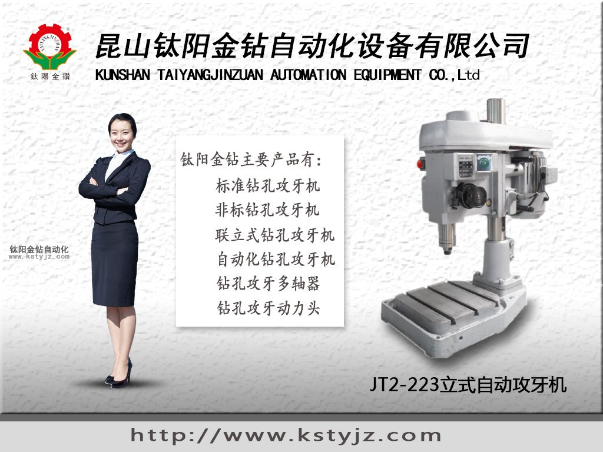
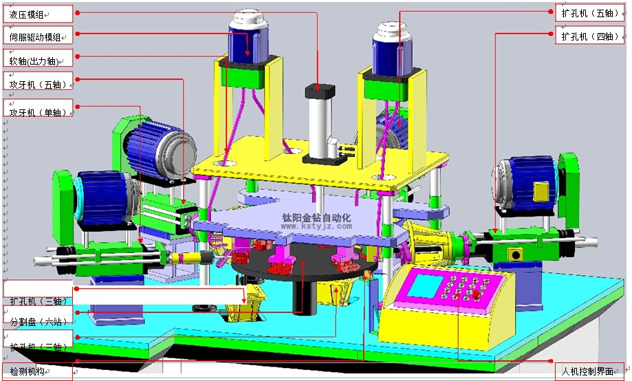
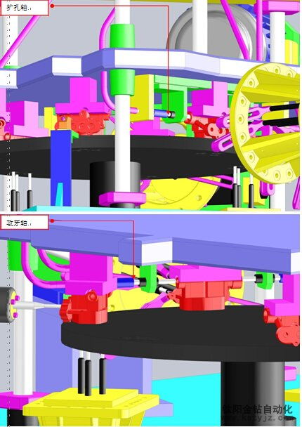
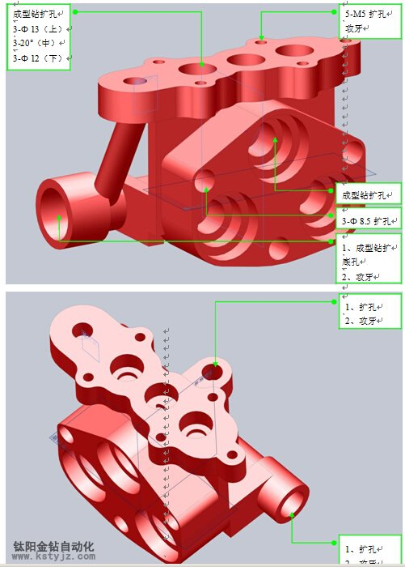
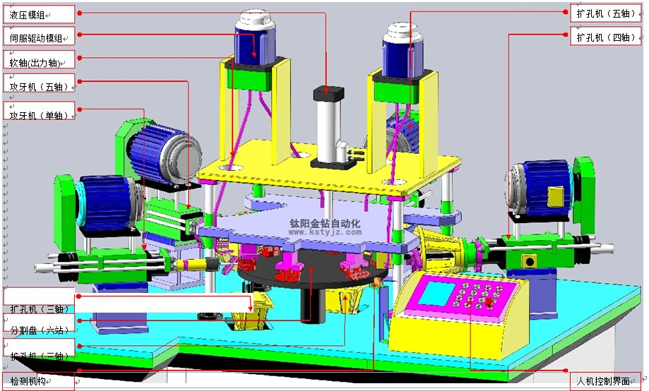
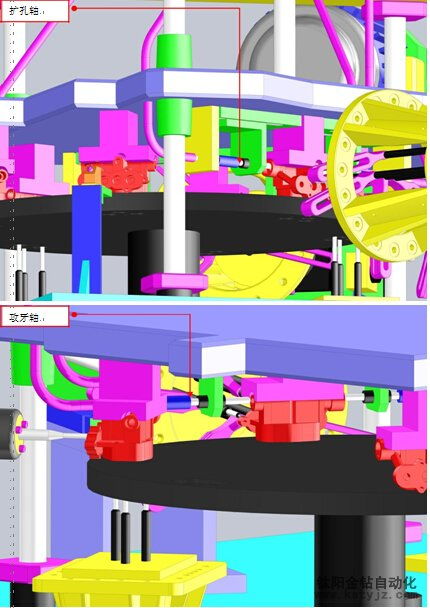
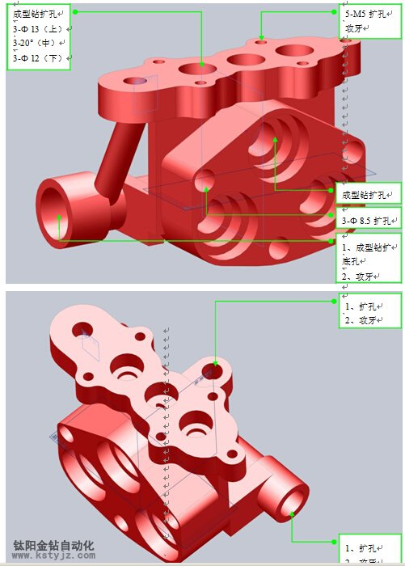

非標伺服自動攻牙機生產加工廠家
文章出處：鈦陽金鑽責任編輯：kstyjz人氣：發表時間：2015-04-18 10:55

鈦陽金鑽攻牙機是一家台資精密機械生產加工設計的廠家，擁有豐富的機械設計與電氣化設計經驗的團隊。產品包括自動攻牙機、攻牙機標準機、鑽孔機標準機、自動鑽孔機、自動攻牙機混合機、多功能自動鑽床攻牙機組、伺服鑽床攻牙機組、全自動伺服攻牙機加工中心等相關設備。客戶遍佈國內各地用戶口碑極佳，多年來業內享譽盛名。
攻牙機鑽床是一種機械加工行業的基礎機型也被稱之為母機，工作原理主要是通過為工件加工通孔以及盲孔後再加工孔內螺紋的加工工序。目前的攻牙機設備多為台式電動攻牙機，這類機型有加工效率高精準度高的特點。另外攻牙機還可以做成氣動搖臂式攻牙機，這類攻牙機多為一些材質較薄加工面較大的加工環境設計例如汽車主體外殼孔位加工、飛機外殼加工等這類大型機械的外殼主體加工。
近些年機械行業逐漸進步，對自動化精密機械需求量逐漸增大。鈦陽金鑽攻牙機在鑽床攻牙機的自動化進程上同時成立了專業的開發團隊為客戶提供更合理的解決方案，以及更合理的自動化設計方案。
目前主流的伺服驅動器均採用數字信號處理器（DSP）作為控制核心，
可以實現比較複雜的控制算法，實現數字化、網絡化和智能化。功率器件普遍採用以智能功率模塊（IPM）為核心設計的驅動電路,IPM內部集成了驅動電路,同時具有過電壓、過電流、過熱、欠壓等故障檢測保護電路,在主回路中還加入軟啟動電路,以減小啟動過程對驅動器的衝擊。功率驅動單元首先通過三相全橋整流電路對輸入的三相電或者市電進行整流，得到相應的直流電。經過整流好的三相電或市電，再通過三相正弦PWM電壓型逆變器變頻來驅動三相永磁式同步交流伺服電機。功率驅動單元的整個過程可以簡單的說就是AC-DC-AC的過程。整流單元（AC-DC）主要的拓撲電路是三相全橋不控整流電路。
隨著伺服系統的大規模應用，伺服驅動器使用、伺服驅動器調試、伺服驅動器維修都是伺服驅動器在當今比較重要的技術課題，越來越多工控技術服務商對伺服驅動器進行了技術深層次研究。
下面是鈦陽金鑽為客戶定制的非標伺服自動化攻牙機設計圖供客戶參考相應的設備結構。

上面展示的是鈦陽金鑽自動化設備為客戶訂製的伺服自動攻牙機樣機解析圖，此為多攻位轉盤式固定加工中心。固定工件後多方位同時加工互不影響提高了加工效率的同時增加了機械加工的精確度。

以上是鈦陽金鑽伺服自動攻牙機的攻位詳情介紹

以上是對應上面伺服自動攻牙機的加工工件樣品。
昆山鈦陽金鑽自動化設備有限公司在精密工業發展的道路上願與您攜手，共同進步！路皎15250231221
下面是鈦陽金鑽為客戶定制的非標伺服自動化攻牙機設計圖供客戶參考相應的設備結構。

上面展示的是鈦陽金鑽自動化設備為客戶訂製的伺服自動攻牙機樣機解析圖，此為多攻位轉盤式固定加工中心。固定工件後多方位同時加工互不影響提高了加工效率的同時增加了機械加工的精確度。

以上是鈦陽金鑽伺服自動攻牙機的攻位詳情介紹

以上是對應上面伺服自動攻牙機的加工工件樣品。
昆山鈦陽金鑽自動化設備有限公司在精密工業發展的道路上願與您攜手，共同進步！路皎15250231221
上一篇：自動攻牙機的工作原理如何選擇自動攻牙機 | 下一篇：江蘇加工中心蘇州攻牙機加工中心廠家
相關資訊
- 非標伺服自動攻牙機生產加工廠家'>非標伺服自動攻牙機生產加工廠家
- 攻牙機能夠使用的方法是什麼呢？'>攻牙機能夠使用的方法是什麼呢？
- 自動攻牙機沖床和沖孔機的對比'>自動攻牙機沖床和沖孔機的對比
- 解析自動攻牙機機床的發展方向'>解析自動攻牙機機床的發展方向
- 攻牙機和台鑽有什麼區別？'>攻牙機和台鑽有什麼區別？
- 全自動攻牙機如何分析螺紋加工的質量問'>全自動攻牙機如何分析螺紋加工的質量問
- 全自動攻牙機的十大功能特點'>全自動攻牙機的十大功能特點
- 手動攻牙機的性能特點'>手動攻牙機的性能特點
- 全自動玻璃攻牙機有那些特點？'>全自動玻璃攻牙機有那些特點？
- 自動鑽孔機專家講內燃式鑽孔機和電動式'>自動鑽孔機專家講內燃式鑽孔機和電動式


推薦文章
- 非標伺服自動攻牙機生
- 立式固定雙軸鑽孔攻牙
- 無錫鈦陽金鑽自動攻牙
- 自動攻牙機在加工時產
- 系統闡述多軸自動攻牙
- 多軸器的操作注意事項
- 昆山鈦陽金鑽精工機械
- 影響電動攻牙機性能的
- 何以自動攻牙機可以做
- 攻螺紋前鑽底孔直徑和